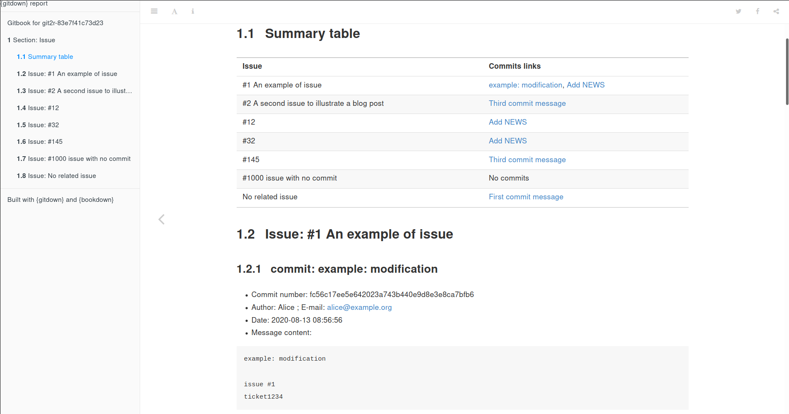

The goal of {gitdown} is to build a bookdown report of commit messages arranged according to a pattern. Book can be organized according to git tags, issues mentioned (e.g. #123) or any custom character chain included in your git commit messages (e.g. category_ for use like category_ui, category_doc, …).
Full documentation on {pkgdown} site : https://thinkr-open.github.io/gitdown/index.html
Installation
You can install the stable version of {gitdown} from CRAN:
install.packages("gitdown")You can install the last version of {gitdown} from GitHub:
remotes::install_github("ThinkR-open/gitdown")Create a reproducible example of a versioned directory
Create a versioned directory with some commits and a NEWS.md in a temporary directory
- Some commits mention an issue with
# - Some commits mention a ticket with
ticket - A commit is associated with a tag
Create a gitbook of commits sorted by a pattern
The main function of {gitdown} is to build this gitbook with all commit messages ordered according to a pattern. Each commit message associated with an issue will be recorded in the section of this issue. A commit message can thus appears multiple times if it is associated with multiple issues.
If you have your own referencing system for tickets in an external software, you can also create the gitbook associated like using ticket as in the example below.

If you add a table of correspondence, you can change titles of the patterns.
Note that you can use {gitlabr} or {gh} to retrieve list of issues from GitLab or GitHub respectively, as presented in “Download GitLab or GitHub issues and make a summary report of your commits”.
# With table of correspondence
pattern.table <- data.frame(
number = c("#2", "#1", "#1000"),
title = c("#2 A second issue to illustrate a blog post",
"#1 An example of issue",
"#1000 issue with no commit"))
git_down(
pattern = c("Issue" = "#[[:digit:]]+"),
pattern.table = pattern.table
)Note that characters like [, ], _ or * will be replaced by - in the titles to avoid conflicts with markdown syntax.

Read list of commits and extract information
As a side effect of {gitdown}, you can get some intermediate information used to build the book with some exported functions.
Get commits with issues mentioned. The searched pattern is a # followed by at least one number: "#[[:digit:]]+". Variable pattern.content lists patterns found in the commit messages.
get_commits_pattern(repo, pattern = "#[[:digit:]]+", ref = "main") %>%
select(pattern.content, everything())
#> 4 commits found.
#> # A tibble: 7 × 12
#> pattern.content sha summary message author email when order
#> <chr> <chr> <chr> <chr> <chr> <chr> <dttm> <int>
#> 1 #32 1fd238… Add NE… "Add N… Alice alic… 2024-02-28 13:22:16 4
#> 2 #1 1fd238… Add NE… "Add N… Alice alic… 2024-02-28 13:22:16 4
#> 3 #12 1fd238… Add NE… "Add N… Alice alic… 2024-02-28 13:22:16 4
#> 4 #2 91e2c1… Third … "Third… Alice alic… 2024-02-28 13:22:16 3
#> 5 #145 91e2c1… Third … "Third… Alice alic… 2024-02-28 13:22:16 3
#> 6 #1 7e998d… exampl… "examp… Alice alic… 2024-02-28 13:22:16 2
#> 7 <NA> 1b6cc5… First … "First… Alice alic… 2024-02-28 13:22:16 1
#> # ℹ 4 more variables: tag.name <chr>, tag.message <chr>, pattern.type <chr>,
#> # pattern.title <chr>Get commits with issues and specific home-made pattern. Use a named vector to properly separate types of patterns.
get_commits_pattern(
repo,
pattern = c("Tickets" = "ticket[[:digit:]]+", "Issues" = "#[[:digit:]]+"),
ref = "main"
) %>%
select(pattern.type, pattern.content, everything())
#> 4 commits found.
#> # A tibble: 12 × 12
#> pattern.type pattern.content sha summary message author email
#> <chr> <chr> <chr> <chr> <chr> <chr> <chr>
#> 1 Tickets ticket6789 1fd238efc602f52946… Add NE… "Add N… Alice alic…
#> 2 Tickets ticket1234 1fd238efc602f52946… Add NE… "Add N… Alice alic…
#> 3 Issues #32 1fd238efc602f52946… Add NE… "Add N… Alice alic…
#> 4 Issues #1 1fd238efc602f52946… Add NE… "Add N… Alice alic…
#> 5 Issues #12 1fd238efc602f52946… Add NE… "Add N… Alice alic…
#> 6 Tickets <NA> 91e2c152a0525fc589… Third … "Third… Alice alic…
#> 7 Issues #2 91e2c152a0525fc589… Third … "Third… Alice alic…
#> 8 Issues #145 91e2c152a0525fc589… Third … "Third… Alice alic…
#> 9 Tickets ticket1234 7e998d8e673e331274… exampl… "examp… Alice alic…
#> 10 Issues #1 7e998d8e673e331274… exampl… "examp… Alice alic…
#> 11 Tickets <NA> 1b6cc5d04920de4a60… First … "First… Alice alic…
#> 12 Issues <NA> 1b6cc5d04920de4a60… First … "First… Alice alic…
#> # ℹ 5 more variables: when <dttm>, order <int>, tag.name <chr>,
#> # tag.message <chr>, pattern.title <chr>Create a vignette that lists all files with date of modification
repo_pkg <- fake_repo(as.package = TRUE)
# List only files in R/ directory
create_vignette_last_modif(repo_pkg)
# List all files of the git repository
create_vignette_last_modif(repo_pkg, path = "")With this example, the vignette will show this content:
| File | Tracked in git | Date of creation | Last modification |
|---|---|---|---|
| NEWS.md | Yes | 2024-02-28 13:22:17 | 2024-02-28 13:22:17 |
| example.txt | Yes | 2024-02-28 13:22:17 | 2024-02-28 13:22:17 |
| R/my_mean.R | No | NA | 2024-02-28 13:22:17 |

Code of Conduct
Please note that the {gitdown} project is released with a Contributor Code of Conduct. By contributing to this project, you agree to abide by its terms.